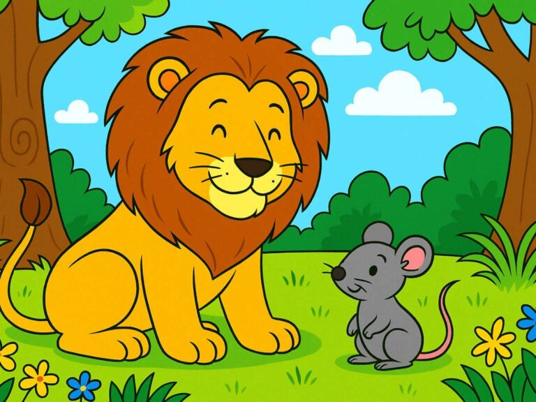

Un día, un poderoso león dormía tranquilamente bajo la sombra de un árbol. Mientras descansaba, un pequeño ratón pasó corriendo sobre él y lo despertó. El león, enfadado, atrapó al ratón entre sus garras.
—¿Cómo te atreves a despertarme? —rugió el león.
El ratón, asustado, le suplicó que lo dejara marchar y prometió que algún día podría ayudarlo. El león se rio al imaginar que un animal tan pequeño pudiera ayudarlo, pero decidió perdonarle la vida.
Tiempo después, el león cayó en una red que unos cazadores habían dejado en el bosque. Intentó liberarse con todas sus fuerzas, pero no pudo. Sus rugidos llegaron hasta el pequeño ratón, que acudió rápidamente.
El ratón comenzó a roer las cuerdas con sus pequeños dientes hasta que consiguió romperlas y liberar al león.
El león comprendió entonces que no debemos despreciar a los demás por ser pequeños o débiles, porque todos podemos ser útiles y ayudar cuando más se necesita.